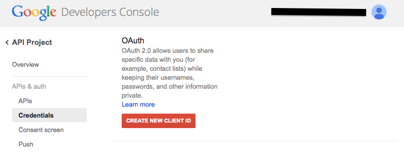
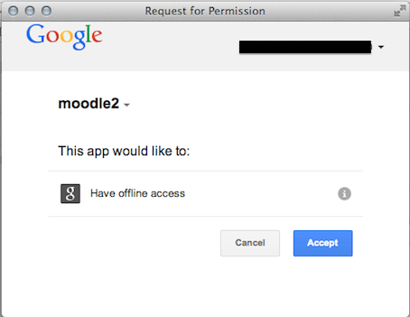

Prior to Moodle 2.3, the Google Drive repository and Picasa web album repository and the Google Docs portfolio and Picasa portfolio could be used without any configuration or registration with Google. In April 2012, Google announced to web application developers that they would be deprecating the service which Moodle was using to communicate with Google and strongly advised developers to move away from it. As a response to this change with Google’s service, Moodle switched to use a new system for communicating with Google called ‘OAuth 2.0’. The OAuth 2.0 system provides a better security system and more friendly experience to Moodle users, though it requires some additional configuration in Moodle.
Each Moodle site now needs to be registered with Google in order to use the Google Drive, Docs or Picasa plugins. As part of the registration process, you will need to enter a URL (something like http://yourmoodlesite.org/admin/oauth2callback.php) which is provided on all Google Drive, Docs and Picasa plugins configuration pages in Moodle e.g. Administration > Site administration > Plugins > Repositories > Google Drive.
- Visit the Google APIs Console (or the new URL Google Cloud APIs Console) and sign into your google account. You will be asked to create a project if this is your first time using this form.
- Click the link on the left “API Access”
- Click the button ‘Create an OAuth 2.0 client ID’
- Enter the branding information ‘Product name’ (i.e. the name of your Moodle site) and ‘Product logo’ (i.e. the URL of your site logo). By providing a descriptive name and link to distinct image then your users will know they are signing into the correct place.
- Click the Next button
- In ‘Client ID Settings’ select ‘Web application’ as application type.
- Click the ‘(more options)’ link next to ‘Your site or hostname’ then in ‘Authorized Redirect URIs’ enter the URL (something like http://yourmoodlesite.org/admin/oauth2callback.php) from the plugin configuration page in Moodle, and leave the ‘Authorized JavaScript Origins’ field blank
- Click the button ‘Create client ID’
The Google Drive repository plugin also requires the Drive API to be enabled as follows:
- In the Google APIs Console click the link on the left “Services”
- Click the button opposite Drive API to turn it on
Your site will then be registered with Google and you will be provided with a client ID and secret to configure all Google Drive, Docs and Picasa plugins.
Tip: If you have more than one Moodle site to register with Google, you can add an authorized redirect URI for each site in step 7. The same name and logo would then be displayed on the authorisation screen for each Moodle site.
Creating an OAuth Client ID
Client ID settings
Registered details
Authorisation screen
- Go to Administration > Site administration > Plugins > Repositories > Manage Repositories.
- Activate the Google Docs and/or Picasa repositories by selecting ‘Enable and visible’ in the dropdown menu.
- Configure each repository by entering the client ID and secret. Make sure you don’t include any white space in the text boxes.
- Save changes.
- Go to Settings > Site administration > Plugins > Portfolios > Manage Portfolios
- Activate the Google Docs and/or Picasa portfolios by selecting ‘Enable and visible’ in the dropdown menu
- Configure each portfolio by entering the client ID and secret
- Save changes
Once configured, Google will present Moodle users with a nice authorisation screen with your Moodle site name and logo for your users to authorise.